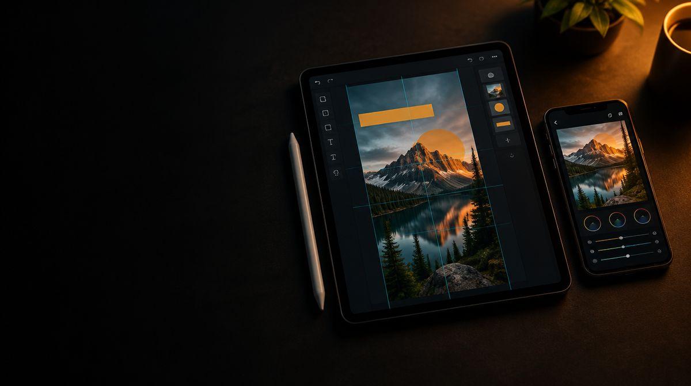
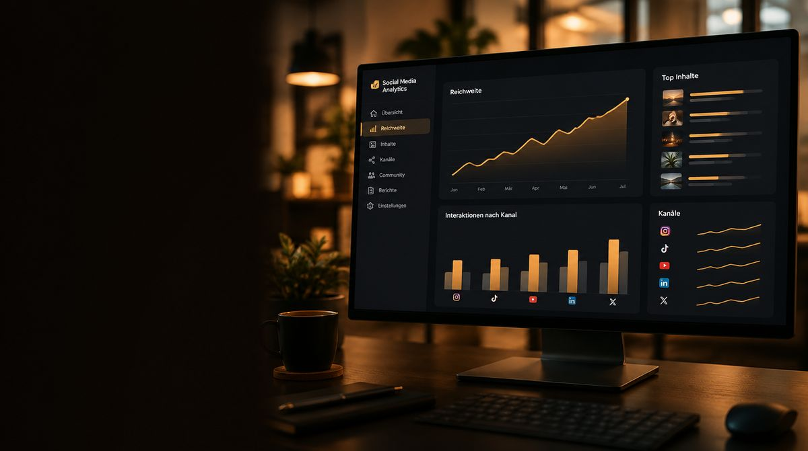

Les réseaux sociaux demandent des thèmes en phase avec votre offre et un rythme que vous pouvez tenir. Nous relions la planification éditoriale à la production convenue de reels, photos et visuels. Canaux, formats et volume de production s’alignent sur vos objectifs. Depuis Pratteln, pour les entreprises de la région bâloise, d’Argovie et de toute la Suisse alémanique.
Instagram, TikTok et LinkedIn posent des exigences différentes en matière de contenus et de ton. Nous adaptons les formats aux canaux choisis. Si le community management fait partie du mandat, nous définissons ensemble les délais de réponse et les responsabilités.
En fin de mois, un rapport : quel format a porté, d’où vient la portée, ce que nous supprimons.
Durée typiqueen continu, résiliable chaque mois après la durée minimale
Ce qui est inclus
Le périmètre en un coup d’œil.
-
Planning éditorial
Les thèmes du mois, coordonnés et validés.
-
Instagram, TikTok et LinkedIn
Format et ton par canal, avec leurs propres exigences.
-
Reels et vidéo courte
Jour de tournage fixe, livraison fixe, sans stress.
-

Photo et visuels
Production au rythme convenu, photo comme visuels.
-
Community management
Partie intégrante du suivi, pas seulement publié.
-

Rapport mensuel
Quel format a porté, ce que nous supprimons.
Quel rôle les réseaux sociaux doivent-ils jouer ?
Expliquer des produits, montrer les coulisses de votre travail, toucher des candidats ou soutenir une campagne : chaque objectif demande d’autres contenus. Un planning éditorial commence donc par les thèmes et les publics cibles. Le nombre de publications en découle, tout comme du matériel que vous pouvez fournir et valider de manière fiable.
Dans une entreprise dotée de son propre service marketing, la stratégie peut déjà être définie. Nous prenons alors en charge des tâches délimitées comme le tournage, le montage, le graphisme ou la mise en œuvre d’une campagne. S’il manque un suivi continu, nous relions planification des thèmes, production et publication dans le périmètre convenu.
Contenu, suivi et publicité : trois missions distinctes
- Production de contenu
- Idées et préparation, prises de vue photo et vidéo, ainsi que l’élaboration des formats convenus. Pour un besoin ponctuel, une production en mode projet est possible.
- Suivi continu
- Planification éditoriale, coordination, publication et analyse. Pour les commentaires et messages, nous définissons les responsabilités, les thèmes de réponse et les voies d’escalade. Les questions techniques ou sensibles sont transmises à la personne compétente dans votre entreprise.
- Campagnes payantes
- Les annonces ont leur propre objectif, une page d’atterrissage et un budget publicitaire séparé. Leur suivi est coordonné avec la présence organique. Plus d’informations sous Google et Meta Ads.
Comment un thème devient du contenu exploitable
Prenons un lancement de produit comme exemple de planification. Le thème fournit des questions pour une vidéo explicative, des images de détail pour le site web et de courts extraits pour les réseaux sociaux. Avant le tournage, on fixe les formats nécessaires, les messages et les lieux de diffusion. Ainsi, on ne découvre pas seulement au montage qu’il manque un angle ou un message important.
Pour chaque publication, le planning éditorial consigne : objectif, message clé, format, matériel nécessaire, responsables, validation et date de publication. Votre interlocuteur vérifie les contenus sur le fond. Nous nous occupons de l’élaboration convenue. Les modifications sont regroupées, afin que plusieurs retours ne mènent pas à des versions contradictoires.
Qu’est-ce qui montre que le suivi fonctionne ?
La portée décrit jusqu’où les contenus ont été diffusés. Elle ne dit pas encore si les bonnes personnes ont compris l’offre. Selon l’objectif, nous regardons donc aussi les réactions aux contenus, les visites des pages d’atterrissage concernées, les échanges pertinents ou les demandes attribuables. Tout effet ne peut pas être imputé clairement à une seule publication.
L’analyse doit permettre de décider : quels thèmes approfondir ? Quels formats valent le temps de production ? Où manque-t-il des informations compréhensibles ? Un rapport sans conséquence pour le prochain planning éditorial n’aide guère.
La production de contenu comme mandat à part
Un film sur votre site web, une courte publication sur les réseaux sociaux et un visuel publicitaire pour une campagne ne s’utilisent pas de la même façon. Avant la production, nous clarifions donc le but, le public cible, le format et l’emplacement. C’est seulement ensuite que viennent les motifs, le déroulement et les variantes nécessaires.
- Concept et préparation
- Planifier les thèmes, le message clé, les motifs, le déroulement et les personnes ou produits nécessaires. Responsabilités et validations en font partie.
- Photo et vidéo
- Produire le matériel pour les usages convenus. L’utilisation prévue influence le cadrage, la durée, le son et le format.
- Post-production
- Préparer la sélection, le montage, les sous-titres et les variantes de format selon le mandat.
- Remise
- Structurer les fichiers pour que votre équipe les retrouve et puisse les utiliser. Les formats de fichiers, l’étendue d’utilisation et la remise des fichiers sources doivent être convenus à l’avance.
Votre service marketing peut définir les thèmes et les campagnes ; nous prenons en charge la production spécialisée. Si l’orientation des contenus n’est pas encore fixée, nous la clarifions lors du briefing. L’expérience acquise auprès de différentes marques aide à tester des angles et des formats sans brouiller votre identité de marque.
Un lancement de produit ou un nouveau site web peut se planifier sous forme de projet. Pour la diffusion payante, nous coordonnons la production avec le suivi de campagne.
Les tâches récurrentes s’intègrent dans le marketing par abonnement. Pour une campagne ou une production ponctuelle, optez pour un mandat de projet.
Votre diagnostic de profil. En 10 minutes.
Indiquez-nous votre profil. Nous l’examinons et enregistrons dix minutes d’écran : ce que votre présence dit de vous, ce qui en reste en mémoire et par quoi nous commencerions.
- Profil et en-tête : ce que vous incarnez au premier coup d’œil
- Vos dernières publications : thème, forme et fil rouge
- Ce qui, parmi tout cela, mène à votre offre
- Les formats adaptés à vos moyens
Parlons-en
Est-ce adapté
à votre projet ?
Quinze minutes suffisent pour une évaluation honnête, même si rien n’en découle au final.
Prendre rendez-vous- Un rythme que vous pouvez tenir
- Des thèmes en phase avec votre offre
- Un jour de tournage fixe plutôt que le stress
- Des formats adaptés aux canaux choisis
- En fin de mois, un rapport sur ce qui a porté
Questions fréquentes sur le suivi des réseaux sociaux.
Encore une question ? Écrivez-nous. Nous répondons en général le même jour ouvrable.
Oui. Le mandat peut se limiter à certains canaux ou à certaines tâches. L’important est une vue d’ensemble commune des thèmes, des dates et des validations, pour que les publications internes et externes s’accordent.
Il n’existe pas de rythme qui convienne à toutes les entreprises. Ce qui compte, ce sont l’objectif, la réserve de thèmes, l’effort de production et la capacité de suivi. Nous fixons un rythme réaliste et le vérifions à l’aune des résultats.
Prévoyez le travail sur les thèmes, la production, le montage, les publications et le suivi. Pour les annonces s’ajoutent le budget publicitaire et le travail de campagne. Les tournages importants ou les versions linguistiques supplémentaires sont des facteurs de coût à part. Le guide du budget aide à tout planifier. Les facteurs qui déterminent l’effort dans le détail sont expliqués dans notre guide Combien coûte le suivi des réseaux sociaux ?
Oui. La publication et le suivi peuvent être séparés de la production. Nous clarifions à l’avance les formats et informations dont votre équipe a besoin pour la réutilisation.
Cela dépend des motifs, de l’ampleur du tournage, des formats et de la post-production. Une liste concrète des livrables est plus parlante qu’un nombre forfaitaire. Elle fait partie de l’offre.